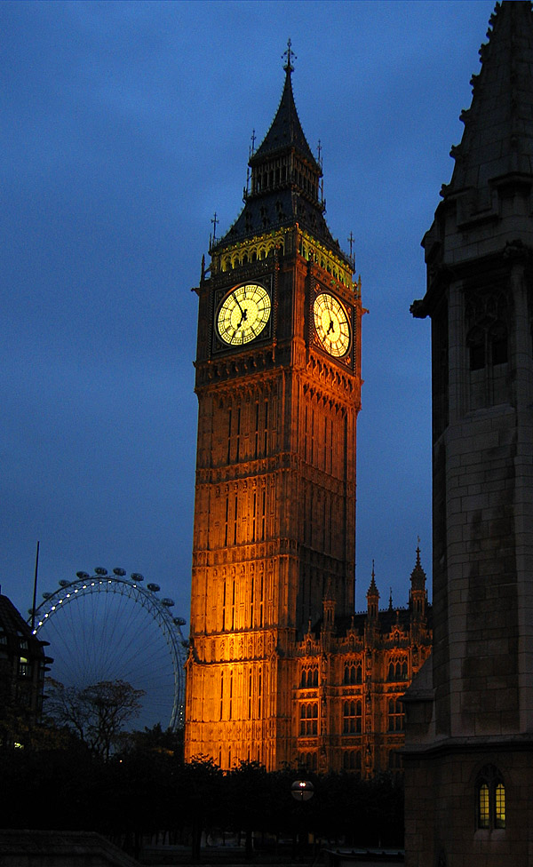
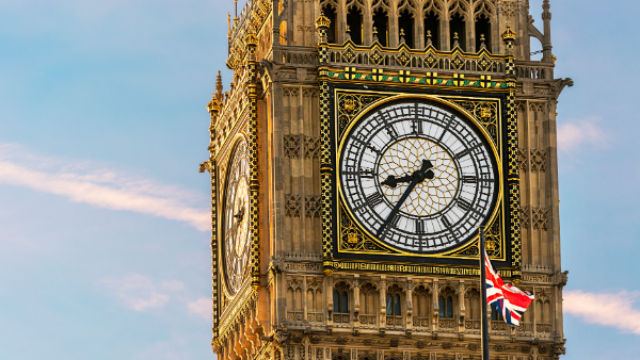

Big Ben
Big Ben (în traducere, Marele Ben) este porecla marelui clopot al ceasului din turnul de nord al Palatului Westminster din Londra. Acest nume a fost utilizat atât în cazul clopotului, cât și al ceasului și chiar al turnului cu ceas. Big Ben este cel mai mare ceas cu clopot și patru fețe, și al treilea turn cu ceas ca înălțime din lume. Ceasul a fost pus în funcțiune în ziua de 31 mai 1859. Cea mai apropiată stație de metrou este Westminster de pe liniile Circle, District și Jubilee.
La Westminster s-a construit un turn cu ceas în 1288. Turnul actual a fost înălțat ca parte din proiectul lui Charles Barry de construcție a unui nou palat, după ce vechiul Palat Westminster a fost distrus de incendiu în noaptea de 16 octombrie 1834.Noul Parlament a fost construit în stil neogotic. Deși Barry era arhitect-șef al Palatului, el a apelat la Augustus Pugin pentru a proiecta turnul cu ceas, turn ce se aseamănă cu alte turnuri proiectate de Pugin, printre care se numără cel de la Scarisbrick Hall. Proiectul turnului cu ceas a fost ultimul realizat de Pugin înainte de a înnebuni și a muri, el însuși scriind, la momentul când Barry a venit la el să ia schițele: „Nu am muncit niciodată atât de mult în viața mea [ca] pentru dl. Barry căci mâine îi dau toate schițele pentru terminarea turnului său cu ceas și este frumos.” Turnul are 96,3 m înălțime.
Primii 61 m de la bază sunt construiți din căramidă învelită în calcar de Anston colorat cu nisip. Restul turnului este din fier. Turnul își are baza pe o placă de beton pătrată cu latura de 15 m și cu o grosime de 3 m, aflată la o adâncime de 4 m sub pământ. Cele patru fețe ale ceasului se află la o înălțime de 55 m. Volumul interior al turnului este de 4.650 m³.Deși este una dintre cele mai importante atracții turistice din lume, interiorul turnului nu este deschis vizitatorilor străini, doar cetățenii Regatului Unit putând să aranjeze vizite (cu multe zile în avans) prin intermediul parlamentarului lor. Turnul nu are lift, astfel că vizitatorii trebuie să urce toate cele 334 de trepte până la vârf. Din cauza schimbării stării solului de la construcție (în primul rând prin construcția liniei de metrou Jubilee), turnul este ușor înclinat spre nord-vest, cu aproximativ 220 milimetri la fața ceasului, aproximativ 1/250.
Big Ben a fost cel mai mare ceas cu patru fețe din lume, fiind depășit între timp de Turnul cu ceas Allen-Bradley din Milwaukee, Wisconsin. Acest ceas însă nu are clopot, deci ceasul din Westminster încă este cel mai mare ceas cu patru fețe și clopot din lume.
Ceasul și fețele sale au fost proiectate de Augustus Pugin. Fețele sunt fixate într-un cadru de fier cu diametrul de 7 m, care susține 312 bucăți de sticlă de opal. Unele din bucățile de sticlă pot fi înlăturate pentru inspectarea brațelor. Cadrul fiecărei fețe este aurit. La baza fiecărei fețe este gravată inscripția în latină: „DOMINE SALVAM FAC REGINAM NOSTRAM VICTORIAM PRIMAM" care se traduce „Doamne, apără pe a noastră regină Victoria Întâia.”
Clopotul principal, denumit oficial Great Bell (în traducere, Marele Clopot), este cel mai mare clopot din turn. El a fost primul care a primit porecla Big Ben. Clopotul instalat inițial cântărea 16.3 tone și a fost turnat la 6 august 1856 la Stockton-on-Tees de către John Warner & Sons. Clopotul a fost denumit în cinstea lui Sir Benjamin Hall, numele acestuia fiind gravat pe clopot. Există și o altă teorie privind originea numelui său, și anume că ar proveni de la numele boxeurului de categorie grea Benjamin Caunt. Se crede că clopotul ar fi trebuit denumit Victoria sau Royal Victoria în cinstea reginei Victoria, dar că un parlamentar a propus această poreclă în timpul unei dezbateri; acest presupus comentariu nu este însă înregistrat nicăieri în Hansard.